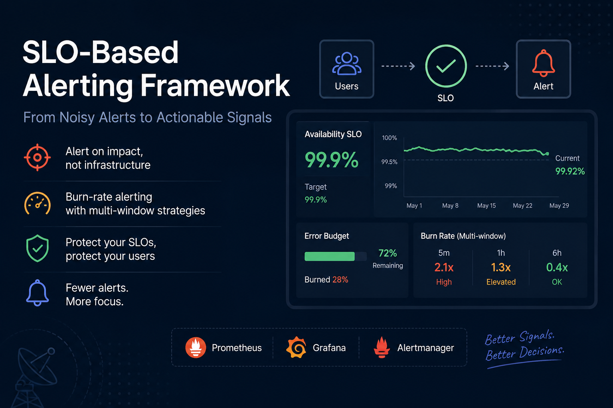

Overview
Service Level Objectives (SLOs) are foundational to modern SRE practices. They define the acceptable level of service performance and availability. But SLOs are meaningless without proper measurement, alerting, and error budget management.
This writeup covers building a production-grade SLI/SLO framework that instructs on what to measure (SLIs), what targets matter (SLOs), when failures matter (error budgets), and how to visualize health in real time (Grafana).

What are SLIs and SLOs?
SLI (Service Level Indicator): A measurable metric of service performance. Examples:
- Request latency (p99 response time)
- Error rate (4xx/5xx responses per second)
- Availability (requests that succeeded)
- Throughput (requests per second)
SLO (Service Level Objective): A target for an SLI. Example: "99.9% of requests complete in under 500ms".
Error Budget: The remaining tolerance before breaching your SLO. If your SLO is 99.95% uptime over 30 days, you have a budget of 21.6 minutes of downtime.
Measuring SLIs with Prometheus
We instrument applications with Prometheus client libraries to expose metrics in a format Prometheus can scrape.
Define metrics for success rate (requests that returned 2xx status codes):
- Counter: total_requests_success incremented on 2xx responses
- Counter: total_requests_error incremented on 4xx/5xx responses
- Histogram: request_duration_seconds to track latency percentiles
Practical example: Your API handler increments metrics:
// Pseudocode: On each request
start_time = now()
response = handle_request()
duration = now() - start_time
// Record metrics
if response.status in [200, 201, 204]:
prometheus.counter("requests_success").inc()
prometheus.histogram("request_duration").observe(duration)
else if response.status >= 400:
prometheus.counter("requests_error").inc()
prometheus.counter("requests_error", {"code": response.status}).inc()
This gives Prometheus the raw signals to compute SLOs. A 99.95% SLO on success rate
means: success_rate = requests_success / (requests_success + requests_error) >= 0.9995
Defining SLOs and Burn Alerts
Once you have SLIs, define your SLOs. Prometheus recording rules compute rolling windows of these metrics.
Real-World SLO Examples
Different services need different SLOs based on business criticality and technical constraints. Here are practical examples from production systems:
- Payment Processing API: 99.95% availability (21.6 min downtime/month). Missing a payment costs direct revenue. This is a critical path service where every minute matters.
- Notification Service (Email/SMS): 99.5% availability (3.6 hours downtime/month). Users expect notifications eventually, but delayed notifications are acceptable for 30 minutes.
- Analytics Dashboard: 99% availability (7.2 hours downtime/month). Historical data queries can tolerate failures; eventual consistency is fine.
- User Authentication: 99.9% availability (43.2 sec downtime/day). Auth failures cascade across all services. This sits on the critical path.
- Internal Admin Tool: 95% availability (36 hours downtime/month). Used by 10 people during business hours. Degradation is acceptable overnight.
The key: SLOs should reflect user impact, not just infrastructure maturity. A 99.99% SLO on a service nobody relies on is wasted engineering effort.
Burn Rate Alerts in Practice
Burn rate alerts are triggered when a service burns through its error budget faster than sustainable. Let's walk through a concrete scenario:
Scenario: Your payment API has a 99.95% SLO. Monthly error budget = 21.6 minutes. A Prometheus alert fires if:
- Fast burn (1-hour window): If error rate hits 5% or higher (14.4x burn rate) → pages on-call SRE immediately. At this burn rate, budget exhausts in 90 minutes.
- Slow burn (6-hour window): If error rate averages 0.5% (3x burn rate) → creates a Slack alert for triage. Budget exhausts in 7 hours.
- Budget exhaustion: Once burn rate reaches 100% (errors consumed all 21.6 minutes for the month), you've breached SLO and won't recover this month.
Error Budget Trade-offs
Error budgets force honest conversations about technical debt and risk. Here's how real teams use them:
- Risky Deployment: A team wants to deploy a major refactor on Friday. Current budget: 2 minutes remaining for the month. Decision: delay deployment to Monday when budget resets. This prevents a 3 AM incident.
- Skipping Staging: Fast-moving team has 45 minutes of error budget. They debate: ship directly to production or test in staging for 2 hours? If staging reveals issues, they save the budget. They choose staging—and find a subtle race condition.
- Backward Compatibility Debt: Supporting 3 API versions costs 0.5% extra error rate in edge cases. Team realizes: drop support for v1 (used by 2 customers). This frees up error budget for new features instead of firefighting.
- On-Call Fatigue: Team has 4 pages per week from false alarms. They adjust alert thresholds to reduce noise, trading slightly lower detection speed for team sanity. Result: fewer false pages, same incident detection overall.
Real-Time Dashboards in Grafana
Grafana visualizes SLOs, error budgets, and burn rates. The dashboard shows:
- Current SLO status (% remaining in error budget)
- 30-day rolling error budget consumption
- Burn rate trends
- Alerting status of all monitored services

Teams reference this dashboard in daily standups, incident reviews, and deployment planning decisions.
SLOs in Incident Response and Post-Mortems
The real value of SLOs emerges during and after incidents. They shift conversations from blame to data:
- During an incident: "How much error budget do we have left?" If 2 minutes remain and it's already been consumed, incident severity is critical. If 30 minutes remain and we just hit 5 minutes, we have breathing room to fix it thoughtfully rather than applying a quick band-aid.
- Post-mortem questions: Instead of "Who broke it?", you ask: "Did this incident consume a reasonable amount of error budget? What's our burndown trend? Is this a systemic reliability issue or a one-off?" This shifts focus to patterns, not blame.
- Prioritization: If a service has breached SLO twice in a month due to the same root cause (e.g., memory leaks under load), that becomes a P1 item to fix before next month's budget resets, not just "something to get to eventually".
Real post-mortem excerpt:
Service: User Notification Queue | SLO: 99.5% available
Incident: 2 hours of 8% error rate due to Redis connection pool exhaustion
Error budget impact: Consumed 96 minutes of monthly budget
Action: Implement connection pool monitoring and auto-scaling. Previously, this was marked "nice to have". Now it's P1 because we have data showing it directly impacts our SLO.
Conclusion
Building SLI/SLO frameworks forces clarity on what matters: reliability in production. Paired with error budgets and burn rate alerts, you ensure your team balances velocity with stability.
Key Takeaway
SLOs work best when they're properly instrumented, monitored, and discussed. Set them too loose and they're worthless. Set them too tight and your team burns out. The right SLO reflects your business priorities and enables confident, sustainable releases.